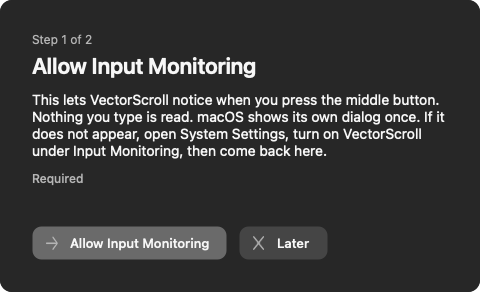
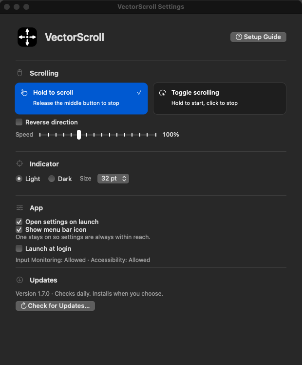

Docs
Getting started
Download the DMG, drag VectorScroll into Applications, and open it. The setup guide asks for two permissions, one page each. Then press the middle button in any window and move the pointer.

Scrolling
Hold to scroll is the default. Hold the middle button, move, release to stop. Nothing happens until the pointer leaves the 10 pt dead zone, so a quick middle click still opens a link in a new tab.
Toggle scrolling keeps going after you let go. Any mouse button stops it. The click that stops it also reaches the app under the pointer, so stop over empty space if you do not want to activate something.
Start delay applies to toggle mode. Require a hold of 50 to 1,000 ms before scrolling engages. Default 200 ms. Turn it off to start on a plain click.
Speed runs from 50% to 200% in 10% steps and applies to both axes. Outside the dead zone, speed scales with distance up to 120 px per tick. Reverse direction flips it for people who expect natural scrolling.
VectorScroll scrolls the window under the pointer, not the frontmost app. It raises that window first.
Indicator
A circle with four arrows marks the point where you pressed. Choose light or dark, and 28, 32, 40, or 48 pt.
Settings

The window opens on launch by default and from the menu bar icon. Command-W hides it and scrolling keeps working. Every change saves immediately.
Open settings on launch and Show menu bar icon control how you reach the app. One of them always stays on. Launch at login registers with the system login items. Setup guide at the top of the window reopens the permission walkthrough.
If the menu bar icon is hidden, reopen the window from Applications or run:
open -a VectorScroll
Updates
The app checks GitHub on launch and every 24 hours. Background checks never show dialogs and need no account.
Check for Updates then Install Update downloads the DMG, verifies its SHA-256 against the release digest, checks the bundle identifier, version, code signature, and processor support, swaps the app in place, and relaunches. Settings are kept. The previous version stays next to the app as Previous.app inside a hidden folder, and a failed swap restores it.
The app has to live in a writable folder, normally Applications. Running from the mounted DMG is refused with an explanation.
Permissions
Input Monitoring lets the app see the middle button. Nothing you type is read. Accessibility lets it raise the window under the pointer.
Releases are signed with a stable certificate, so macOS keeps both grants across automatic updates. Builds you compile yourself are signed ad hoc and need re-granting after each build.
Status for both refreshes every second in Settings. A missing permission shows a button that opens the right System Settings pane.
Troubleshooting
Nothing happens on middle click. Check Input Monitoring in Settings. If it says Allowed and still nothing, quit and reopen the app. macOS sometimes needs a relaunch after a grant.
The wrong window scrolls. Accessibility is missing, so the app cannot raise the window under the pointer. Grant it in System Settings.
Middle click stopped opening links in new tabs. You are in toggle mode with the start delay off. Turn the delay on, or switch to hold mode.
Install Update is refused. The app is running from the DMG or from a read-only folder. Move it to Applications.
Building from source
Requires macOS and a Swift 6 toolchain.
swift build -c release ./scripts/build-app.sh
The bundle script builds both architectures, renders the icon set, and writes dist/VectorScroll.app. It signs ad hoc unless CODESIGN_IDENTITY names a certificate in your keychain. The README covers the test harness.